logtrail — a log tail in the terminal — 14 screenshots
Every screenshot this task has committed, with the numbers the audit ran on it.
These are the same files the gallery thumbnail is taken from. Generated by
tools/shotsindex.mjs from tools/work/shoot/04-tui.json, the report the last complete
node tools/shoot.mjs 04-tui run wrote. Edit the manifest, not this page.
the task · the gallery
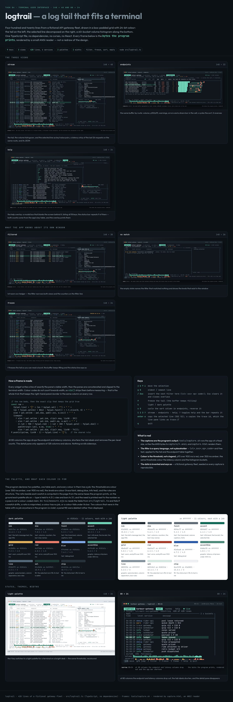
board — index.html at 1500 px viewport, whole page, 791 KB.
console0contrast0unnamed controls0img without alt0landmarks header+main+footer
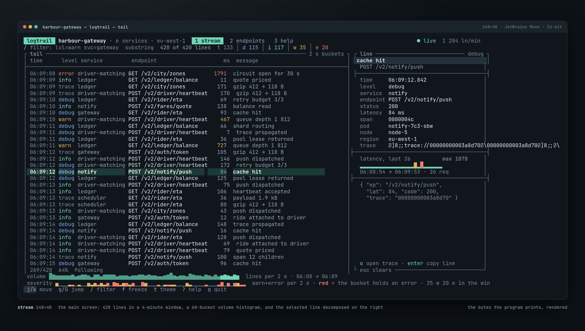
stream — capture.html?frame=stream at 1660 px viewport, 590 KB.
console0contrast0unnamed controls0img without alt0landmarks main
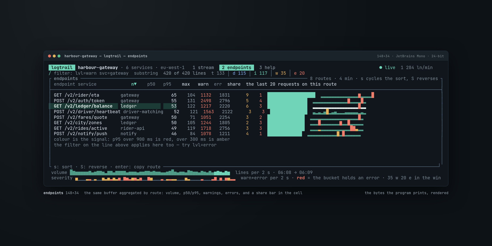
endpoints — capture.html?frame=endpoints at 1660 px viewport, 285 KB.
console0contrast0unnamed controls0img without alt0landmarks main
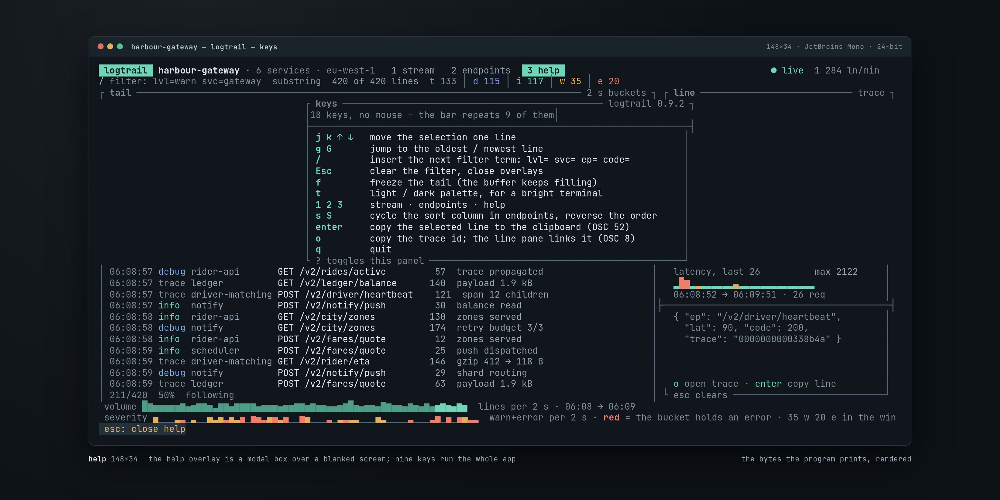
help — capture.html?frame=help at 1660 px viewport, 393 KB.
console0contrast0unnamed controls0img without alt0landmarks main
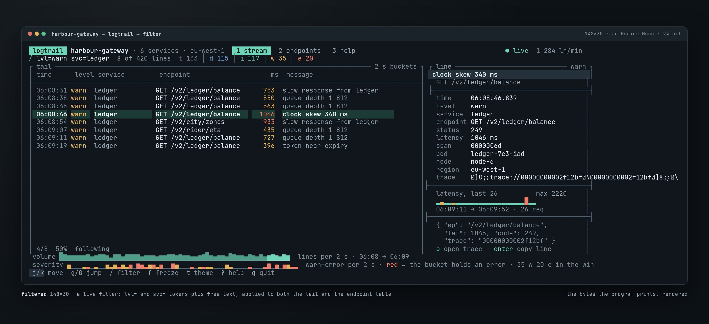
filtered — capture.html?frame=filtered at 1660 px viewport, 340 KB.
console0contrast0unnamed controls0img without alt0landmarks main
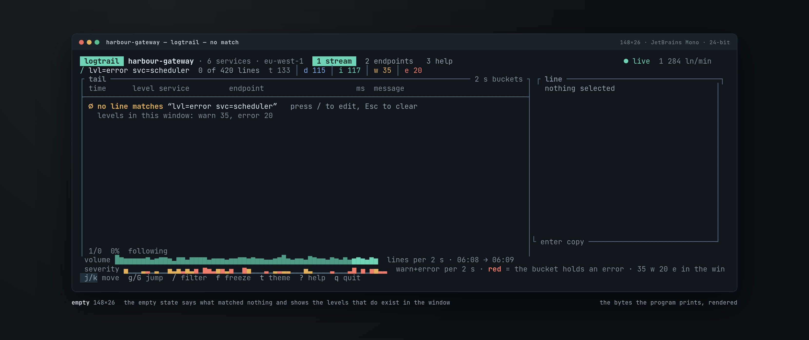
empty — capture.html?frame=empty at 1660 px viewport, 178 KB.
console0contrast0unnamed controls0img without alt0landmarks main
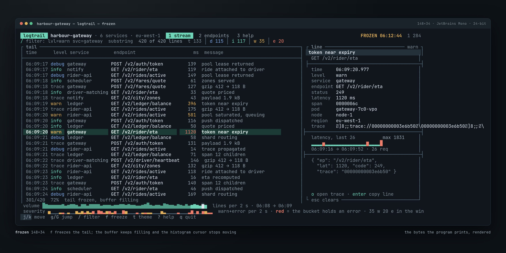
frozen — capture.html?frame=frozen at 1660 px viewport, 506 KB.
console0contrast0unnamed controls0img without alt0landmarks main
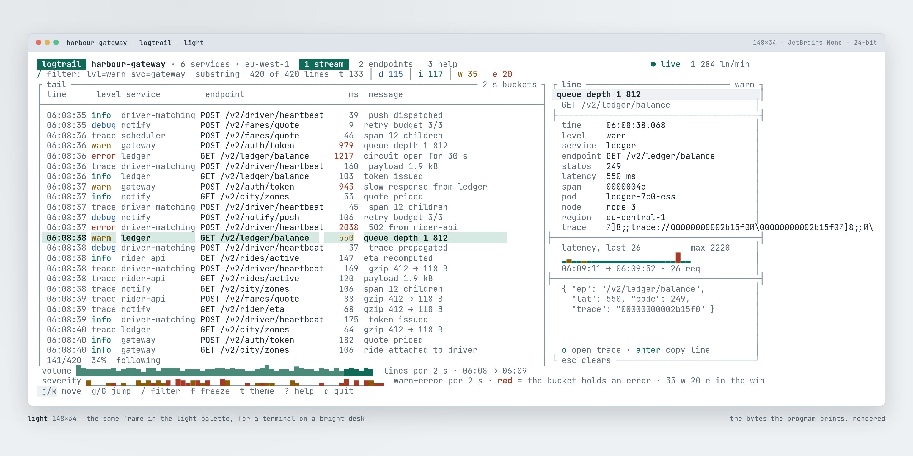
light — capture.html?frame=light at 1660 px viewport, 558 KB.
console0contrast0unnamed controls0img without alt0landmarks main
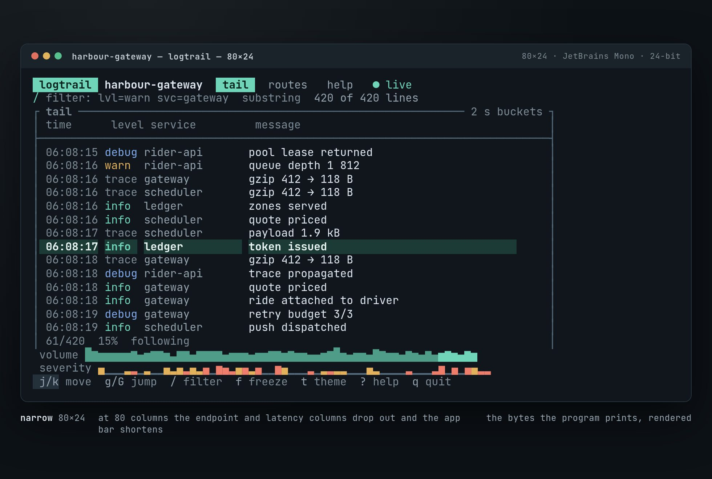
narrow — capture.html?frame=narrow at 980 px viewport, 200 KB.
console0contrast0unnamed controls0img without alt0landmarks main
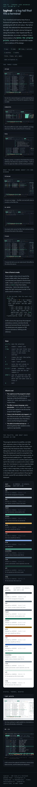
phone — index.html at 390 px viewport, whole page, 484 KB.
console0contrast0unnamed controls0img without alt0landmarks header+main+footer
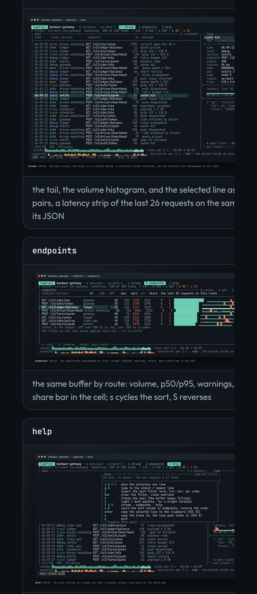
phone-frames — index.html at 390 px viewport, 219 KB.
console0contrast0unnamed controls0img without alt0landmarks header+main+footer
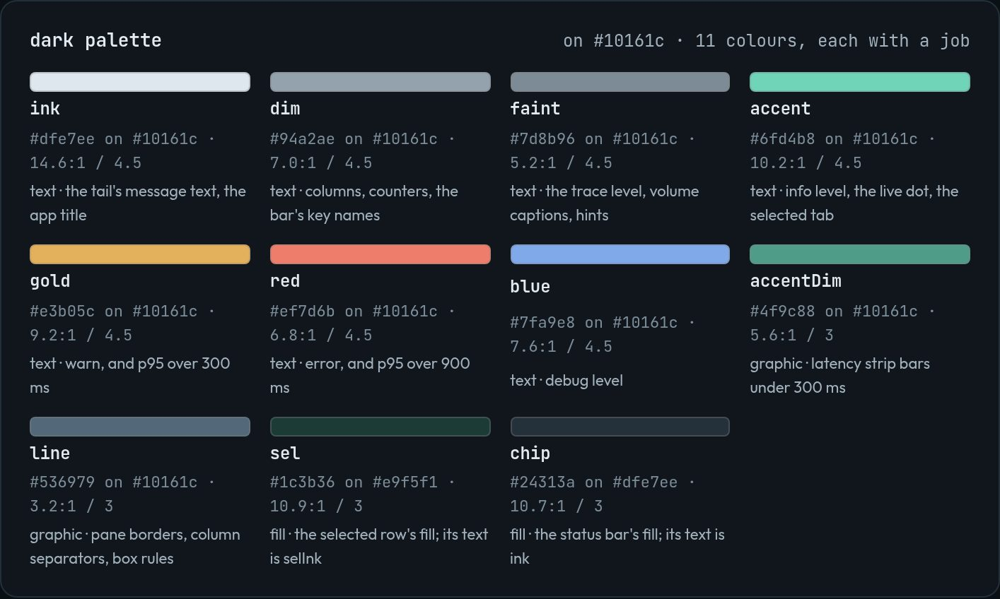
palette-dark — index.html at 1500 px viewport, 108 KB.
console0contrast0unnamed controls0img without alt0landmarks header+main+footer
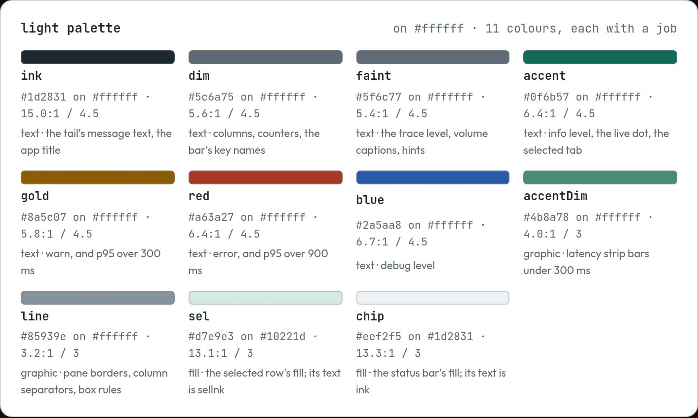
palette-light — index.html at 1500 px viewport, 115 KB.
console0contrast0unnamed controls0img without alt0landmarks header+main+footer
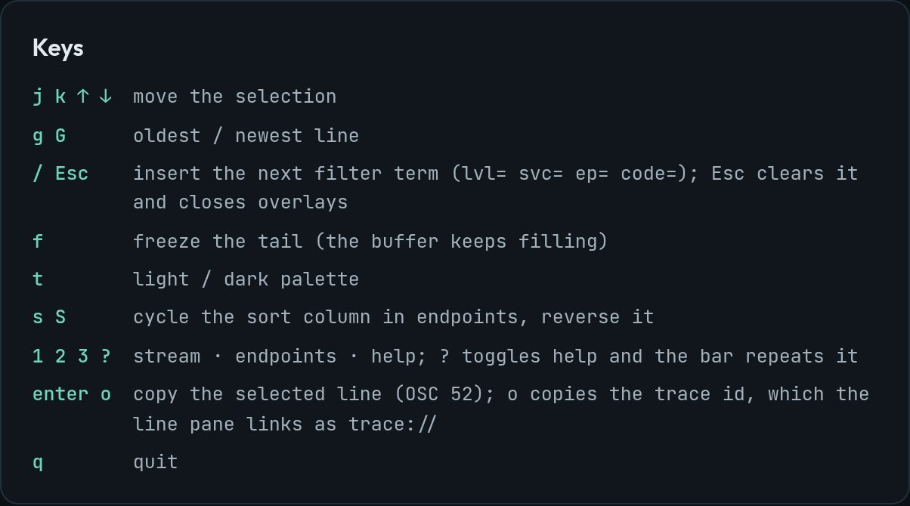
keys-legend — index.html at 1500 px viewport, 61 KB.
console0contrast0unnamed controls0img without alt0landmarks header+main+footer